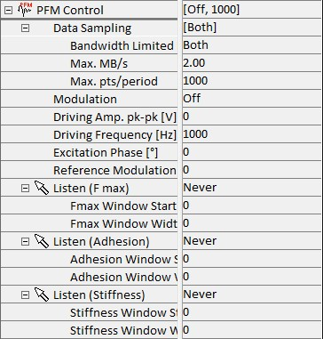
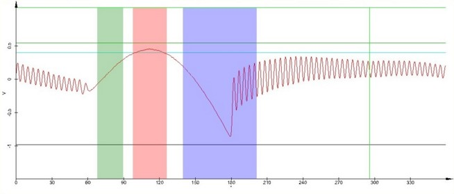

|
PFM 控制
|
PFM 控制参数组包含获取 DPFM 图像所需的附加控制参数。
更多信息（操作指南）：

数据采样
此部分控制来自 AlphaControl 的数据传输。较高的采样率可以提高粘附力的确定精度。
带宽限制
定义应使用哪个值作为限制。
最大 MB/s
按每秒数据大小限制。
最大 点/周期
按每周期数据点限制。
两者
受两个值限制。
最大 MB/s
取决于每秒数据大小的最大数据速率。
最大 点/周期
取决于每周期数据点数量的最大数据速率。
调制
此二进制变量将悬臂梁的调制打开或关闭。
驱动振幅 pk-pk [V]
悬臂梁正弦调制的峰峰值电压可以作为 0 到 20 V 之间的值输入。
驱动频率 [Hz]
悬臂梁振动的频率可以作为 1 到 10000 Hz 之间的值输入。
激励相位 [°]
可以调节激励相位，以确保脉冲力曲线以标准方式显示在图形窗口中，即窗口左侧附近有 snap-in，然后力增加到最大力，之后力减小到最大粘附力，以及 snap-out 之后的自由振动，如图 1 所示。
。
参考调制相位 [°]
可以调节参考调制相位，以确保正弦参考调制信号显示最小值，而 DPFM 曲线显示最大值。这对于将脉冲力曲线正确表示为力-距离曲线是必要的。
监听 (Fmax/粘附力/刚度)
监听参数允许通过鼠标从显示的 DPFM 曲线中选择用于确定最大力/粘附力/刚度的角度范围。
Fmax/粘附力/刚度窗口起始 [°]
DPFM 曲线中硬件将搜索最大力或确定粘附力/刚度的区域的起始点，可以使用此参数在 0 到 360° 之间定义。
Fmax/粘附力/刚度窗口宽度 [°]
DPFM 曲线中硬件将搜索最大力或确定粘附力/刚度的区域的宽度，可以使用此参数在 0 到 360° 之间定义。

图 1：典型的 PFM 曲线及标记的搜索区域。（绿色 = 刚度；红色 = Fmax；蓝色 = 粘附力）